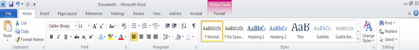

Ash Manor School
Computing Department
Word processing
Word processing is the creation, editing and publication of digital artefacts which are based on formatted text. We use a word porcessor in school to write up assignments, essays, magazine articles, letters, plays and many other uses. In this unit we will also introduce you to the file system, and how to use this to your advantage.
Aims
This is an introduction to Word processing, and file operations. We will be focusing on the theme "Employment"By the end of this unit you will learn:
- Level 3
- (IT) Organises files in a folder structure
- (IT) creates digital content to achieve a goal
- (IT) Combines digital packages (imports pictures, and spreadsheets into a word document)
- (IT) Makes appropriate improvements to digital content based on feedback
- Level 4
- (IT) Makes judgements about digital artefacts produced.
- (IT) Recognises audience when producing digital artefacts.
- (IT) Uses criteria provided to evaluate the quality of digital artefacts
- (IT) independantly identifies improvements to digital content, and makes appropriate improvements
- Level 5
- (IT) Designs criteria to evaluate the quality of digital artefacts
- (IT) Uses criteria to identify appropriate improvements to digital content, and carries out these improvements
- (IT) Uses styles appropriately.
- Level 6
- (IT) Justifies choice of software and independantly combines resources to produce a digital artefact.
- (IT) Designs digital artefacts for wider, or remote audience.
- (IT) Designs criteria for users to evaluate the quality of digital artefacts
- (IT) Uses feedback from users to refine solution, or make recommendations for refinements.
Activity 1
Word Processing
Learning aims:
- Creates digital content to achieve a goal - L3
- Combines digital packages (import pictures into a word document) L3
- Uses styles appropriately
Starter
A newspaper classified sales clerk notes down this advertisement over the phone:
Laptop for sale, Intel Pentium M 760 Processor 2.0 GHz, 512MB memory, 80GB hard disk. £225. Excellent condition. Phone John Smith 417639.
Describe five different features of a Word Processing package you could use to improve this advert. Save your answer in a word document as "Starter" and upload to here.
Task 1
HOW DO YOU COMMUNICATE WITH THE COMPUTER?
In the windows environment you can communicate with the computer using a Graphical User Interface (GUI -pronounced Gooey). This means you give instructions to the computer by using a mouse to click on icons, tabs and buttons. In Microsoft Word there is a ribbon which goes across the window. This is where you can find a set of tabs, a series of buttons, icons and controls called commands.
Do you know your icons? An icon is a small symbol or picture that represents a series of instructions or programs.

Complete the table and upload your saved document here
Activity 2
Applying for a Job!
You have been asked to research and apply for a job. In order to apply, you need to produce a CV and covering letter. Job can be any choice of yours.
Learning aims:
- Uses styles appropriately - L5
Task 1 - Writing your CV
Here are a few simple guidelines:
- keep it short (1-4 pages)
- put your best skills first
- use simple language and short sentences
- be positive and enthusiastic
- don’t staple lots of things to it
- make it look good – and always type it
- check your spelling and grammar (get someone else to check it too)
What should my CV say?
Here are the main things you need to include:
Personal details.
Give your full name, and an address and phone number where the employer can contact you. Age and family details are optional.
Career or personal objective.
Say what you want to achieve in your working future. This helps the employer relate your skills to the job.
Work experience.
List the jobs you’ve had, starting with the most recent and working backwards. Give the job title, the employer’s name, the date you started and finished, and a brief description.
Skills and abilities.
List your work-related skills and abilities. Some of these might be skills you learnt outside work. So include unpaid, community or family work and say how these skills might suit the job you are applying for.
Education and training.
Include your schooling and other training. Give details of technical and trade certificates, and any study or courses you’ve done (even if you haven’t completed them).
Other things.
Give brief details of your hobbies and interests. Include anything else you think is important such as driver’s licence or your state of health.
Referees.
Include at least 2 people who can talk about how well you’ve worked in the past. Give their name, position, and phone number. But check with them first. Let them know they may be contacted and ask what they will say about you.
Create your CV using a word processor and click here to upload your CV You can use the CV Template
Task 2 - Writting a covering letter for a Job
Cover Letter Tips: The basicsAlways send a cover letter as part of any job application. Be neat and tidy: type your letter on unmarked, white A4 paper. Keep it concise: ideally just one page.
Attention to detail: ensure there are no spelling or grammatical mistakes (especially the correct job title and name of who you are writing to).
Make sure you include your contact phone and address details. Be professional, positive and confident.
Bullet points are great to describe your key skills / achievements but remember you are writing a formal letter. Most of your letter should be written in full sentences and split into relevant paragraphs.
What to say
- Include where you saw the job advertised and the vacancy reference number if applicable.
- Describe why you are interested in this job.
- Include highlights or key achievements from your background but remember you don’t need to repeat lists of responsibilities from your CV.
- Make it relevant to the job you’re applying for: you need to show how your skills, experience, and qualifications match what they are looking for. (Refer back to their job advertisement or job description).
- Don’t forget that any skills gained through education, training, work experience, voluntary work and/or community activities might also be relevant.
- Cover off any other details as applicable: for example, your willingness to relocate if you live in a different town from where the job is based.
- Confirm you would appreciate the opportunity to be interviewed. Say if you are going to be unavailable during the likely interview process timeframe.

Activity 3
Visual Literacy exercise. - "Congratulation, you are through to next level"
Once again Congratulations! Tou have been short listed for an interview.
Part of the process is to produce a company logo. You may use other software to produce your design. However you need to justify the choice of software and combined resources to produce a logo. You must import your logo into word document as we might not support other software.
We expect to see progression as to how you deliver your final product.
We expect the following from you:
- Logo (import to word processing) – Your first attempt
- Logo (import to word processing) –Your second attempt showing improvements
- Logo (import to word processing) – Your final design, following feedback
- Report – Word document explaining/justifying your decisions step by step.
Learning aims:
- Creates digital content to achieve a goal - L3
- Recognises audience when producing digital artefacts. L4
Task 1 - Logo for the Company (Create a Logo)
Import your logo into a word documents and save as "Logo.YOUERNAME" Click here to upload your Logo version 1Activity 4
Visual Literacy exercise.Learning aims:
- Makes judgements about digital artefacts produced. L4
- Designs criteria to evaluate the quality of digital artefacts - L5
- Independantly identifies improvements to digital content, and makes appropriate improvements - L4
Task 2 - Develop your Logo
Self Mark your design - Independently identified improvement to your logo, and make appropriate improvements. Import your logo into a word documents and save as "Logo1.YOUERNAME" Click here to upload your Logo version 2Activity 5
Visual Literacy exercise.
Learning aims:
- Makes appropriate improvements to digital content based on feedback - L3
- Uses feedback from users to refine solution, or make recommendations for refinements.L6
Task 3 - Review your Design
Peer Mark - Make appropriate improvements to your desgin based on feedback. Import your logo into a word documents and save as "Logo_Final.YOUERNAME" Click here to upload your final LogoActivity 6
Visual Literacy exercise.
Learning aims:
- Justifies choice of software and independantly combines resources to produce a digital artefact. L6
- Organises files in a folder structure - L3 - Task 2